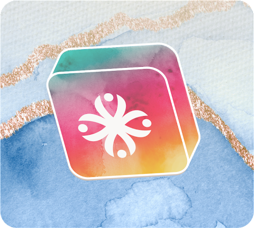
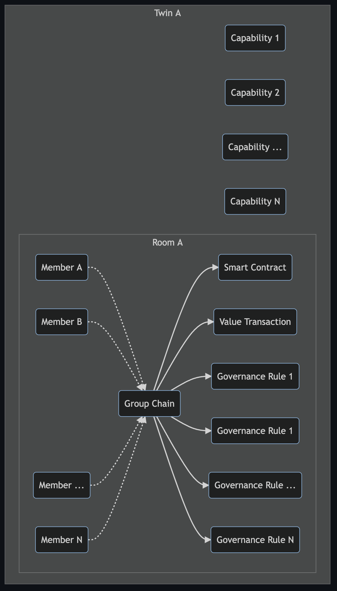
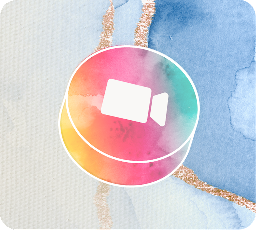
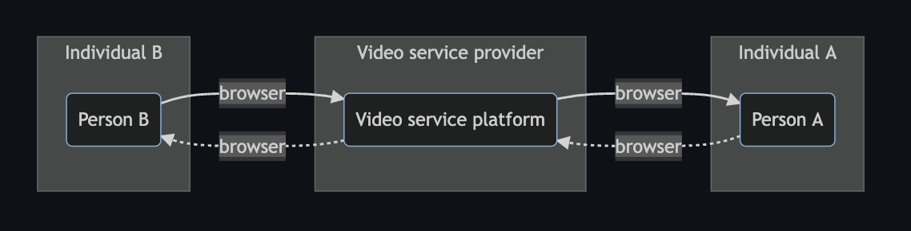
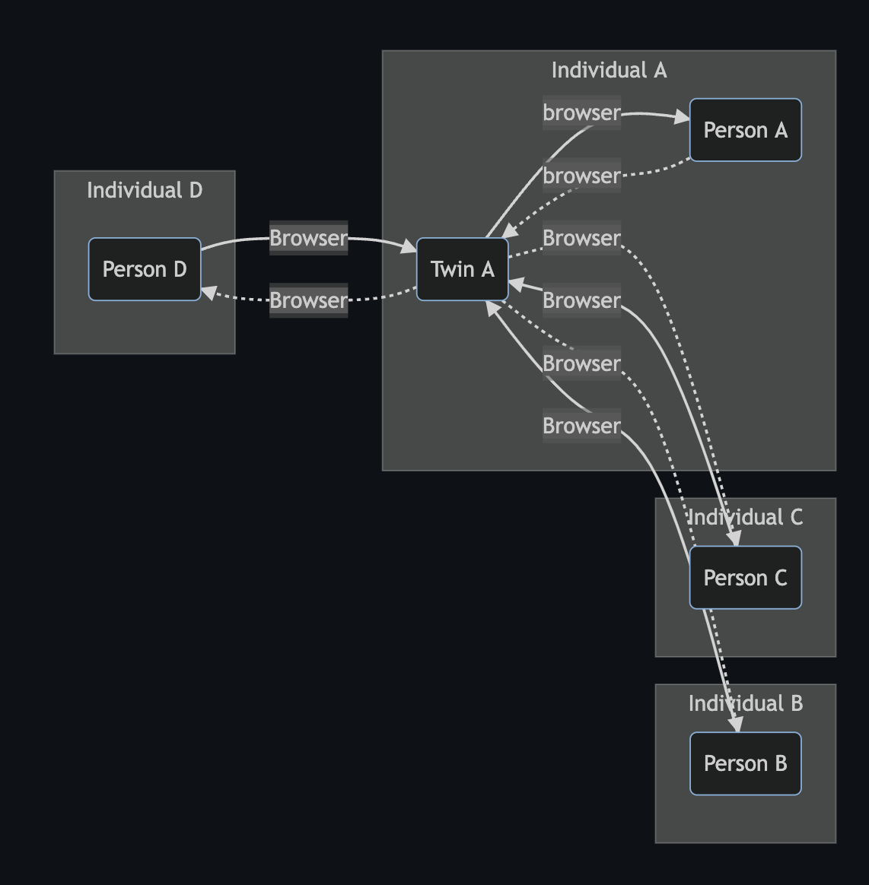
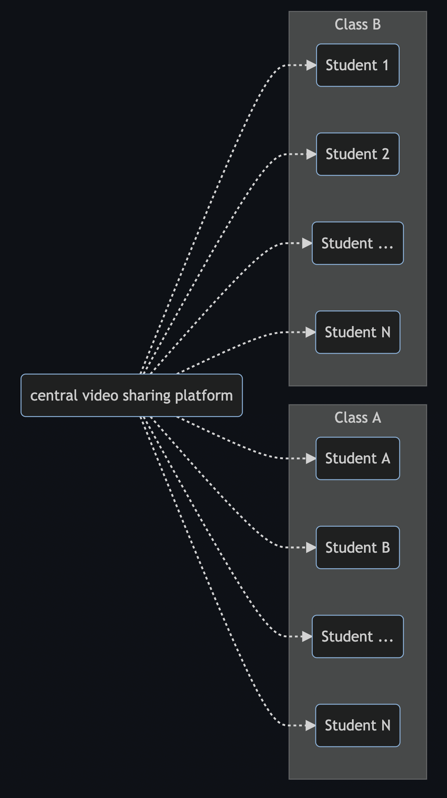
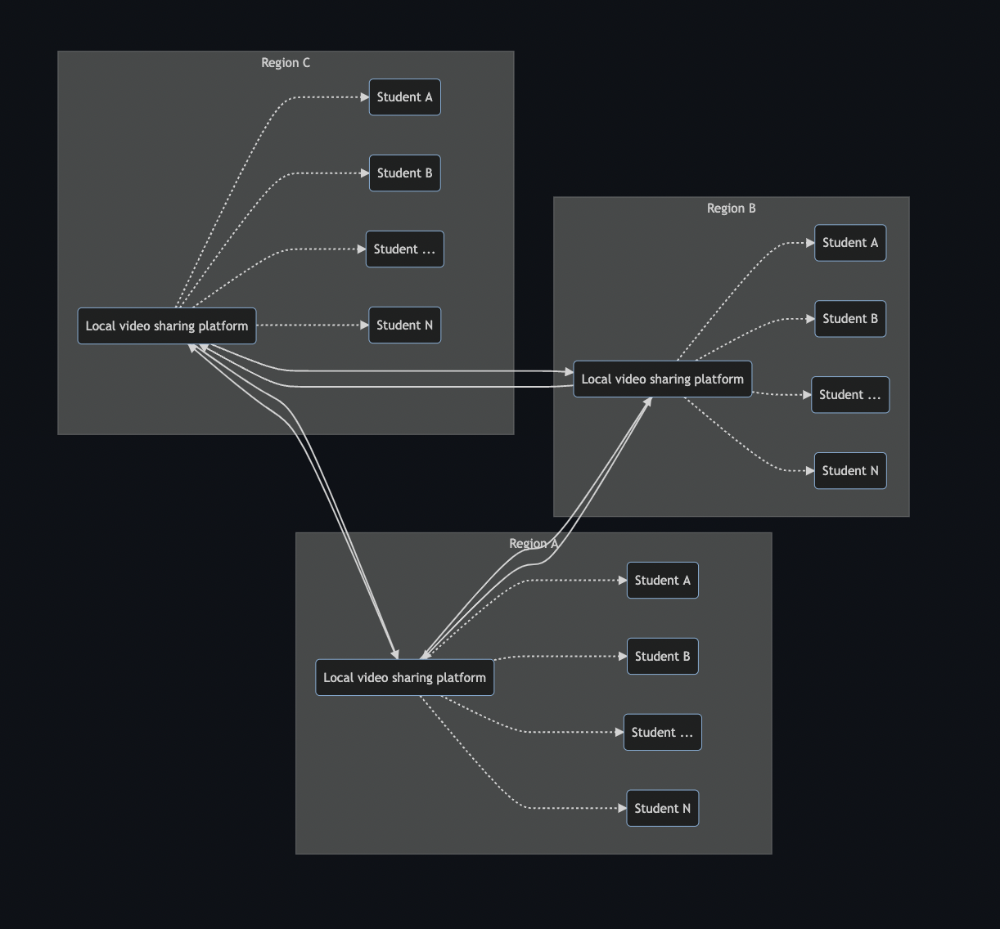
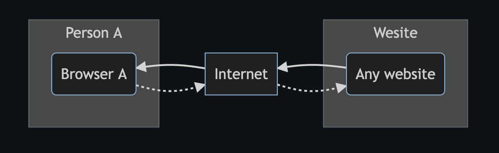
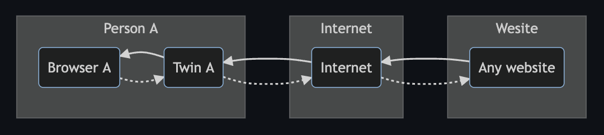

Rooms are chat rooms which are part of your digital twin. In these rooms you can invite people that make up / are part of you room, covering a specific topic. Specific topics could be: my football club, my investment club, my family, my friends. Anything is possible with regards to rooms, people are bonded together in groups on you personal twin.
Examples of groups of people using rooms: local football club, book club, companies, enterprises, states, countries.
Within these group functionality can be made available. Example (and probably first MVP functionality is:
- be be used for simple chat function between all members.
- can be used to create and operate a DAO
- variable (free) consensus rules can be implemented to reflect the rules of the DAO.
Rooms will provide functionality to non technical groups in an easy way to self organize and create consensus mechanisms to govern activities and transact money all done from you own private digital space.

The interface will present it self as a chat interface to the members of the group. In the chat language there will be a very simple language available to create the chains and consensus rules around it. For consensus a quorum )5 out of 8 members or for larger groups for example 70% of the members) need to agree. Once this quorum has been achieved by a simple poll in the group, the transaction is done, the governance rule is accepted.
All of this is an individuals twin, in which a room was created which presents this functionality to the group members.

Share itt
Share itt is an existing platform: The Shareitt platform makes it fun and easy to exchange second-hand used or new items. This implementation of Shareitt is not a centralized platform on which all items are listed on a single site, no this decentralized version is where the user manages its own platform for their os items on sale.
Next Generation Marketplace
Shareitt allows users to exchange items they don't need or are no longer using, no matter the type of item, its size or worth. Each item uploaded to the marketplace gets its own unique value in Shareitt points and becomes available to tens of thousands of users who can request the item in exchange for points. Points earned then allow users to receive items they want from other users, and so on.
Currency: Out, Points: In
Shareitt commerce is not based on money. Shareitt points are accumulated by users in different ways and may then be "spent" in our dynamic marketplace, which has tens of thousands of items in different categories. The best way to earn Shareitt points is to upload as many items as possible and exchange them – for points - with other users.
Substantial social catalog
The items on the Shareitt platform are uploaded to the marketplace by users, in a quick, simple process. The more detailed the item description, the more attractive it is for other users. High-quality pictures, detailed descriptions, diverse categories, and great points value - generate thousands of exchanges every day. Together, we are creating an extensive social catalog being used by tens of thousands of users.
So many gifts!
When you register, each user is awarded with 100 points as a welcome gift so that you may enjoy the experience on your first visit. In order to earn Shareitt points, we recommended uploading and offering as many items as possible to other users. Another way to earn points is by redeeming gifts received for your actions on the platform: uploading items, giving, exchanging, granting wishes, inviting friends, and more.
A new collaborative economy
At Shareitt, we believe in a collaborative economy in which the individual gives to the community, the community creates value for the individual, and everyone benefits. Hundreds of communal platforms have been created in different fields in recent years. Shareitt users participate in social commerce by exchanging items for points and create a new collaborative economy together.
Benefits:
- personal marketplace representing your personal items on sale.
- always compliant with local law as the data and trade stay local to the individual.
- intern community on country trade, seller and buyers have to make themselves compliant with local legislation

Developing code
Code development platform that manages you code in a git (like gitea). Your code is stored in a secure (quantum secure) environment in you own digital sovereign space. All the regular interfaces (ssh, https and more) are available to users and to groups of users allowing you and your development group.
Features:
- 1
- 2
- 3
Benefits:
- 1
- 2
- 3

Communication tool: Chat
The chat communication tools presents a simple interface to manage individual and group messaging. The interface presented is very similar to mainstream messaging platforms but works in a very different way.
Centralized messaging service always have a third party (company) involved. A message would follow the following path:

graph LR
subgraph Individual A;
INDIVIDUALA(Person A);
end;
INDIVIDUALA .->|browser| MESSAGINGA;
MESSAGINGA -->|browser| INDIVIDUALA;
subgraph Messaging provider;
MESSAGINGA(messaging platform);
end;
INDIVIDUALB(Person B) -->|browser| MESSAGINGA;
subgraph Individual B;
MESSAGINGA .->|browser| INDIVIDUALB;
end;
The problem here is that the messaging provider sits in the middle and has access to all messages passing through its messaging platform. This also means that messaging providers can (or can be told to) do the following:
- do machine learning on message content and/or message volume, frequency, size and all sort of other data.
- expose, compile and sell machine learning outcome (metadata)
- provide access to meta data or actual messaging information to other companies or governing bodies
- and much, much more.
There are numerous documentaries and news stories out there that prove that this is the case. A decentralized messaging platform avoids all of this
Decentralized messaging sends and receives messages from private messaging instances to the receiving party's private (messaging) instance. It does not have a central man in the middle. There are two main types of decentralized messaging in this capability:
- private chat: private entity to private entity
- group chat: one private entity creates and hosts the "group" and all the other members are invites to post and receives message from this group. The entity that starts the group also sets the groups "rules"
Private Chat
With private chat we mean a chat between to entities. These entities could be individuals, organizations, companies, clubs, basically anything. The chat is a one to one chat and information (data) is exchanged between two private, secure and personal messaging platforms.
- a chat starts with inviting the other persons twin (messaging and other services platform ). In this case the twin of the other person needs to be found and sent an invite message.
- if the person accepts the invite a secure connection allows messages to be send person to person without a third party in the middle. Only the (twins of) two people involved has access tot he message data (and metadata)
graph LR
subgraph Individual A
INDIVIDUALA(Person A)
INDIVIDUALA .->|browser| TWINA
TWINA -->|browser| INDIVIDUALA
end
TWINA(Twin A) .->|secure network| TWINB(Twin B)
subgraph Individual B
TWINB .->|browser| INDIVIDUALB
INDIVIDUALB(Person B) -->|Browser| TWINB
TWINB -->|secure network| TWINA
end

The chat functionality allows most (if not all) of the standard functionality know from many centralized platforms:
- send text message
- send voice message
- message reply
- message forward
- send photo/file/
From the chat function you can also initiate video conference, and have control over accepting, deleting and blocking users.

Group Chat
Group chat is unique to this peer to peer chat platform. The group functionality is initiated by the group creator and this action creates the group function on the initiators messaging platform (twin). The group is then formed by inviting other entities and when they accept they get read and write access in the group messaging functionality.

graph LR
subgraph Individual A
PERSONA(Person A) --> TWINA
TWINA --> PERSONA
TWINA(Twin A) --> GROUP(group)
GROUP .-> TWINA
end
GROUP .-> TWINB
subgraph Individual B
TWINB(Twin B) --> GROUP
TWINB --> PERSONB
end
PERSONB(Person B) --> TWINB
subgraph Individual C
GROUP .-> TWINC
TWINC(Twin C) --> GROUP
TWINC --> PERSONC
end
PERSONC(Person C) --> TWINC
GROUP .-> TWIND
subgraph Individual D
TWIND(Twin D) --> GROUP
TWIND --> PERSOND
end
PERSOND(Person D) --> TWIND
Look and feel in a browser


Communication tool: Video
A truly peer to peer video chat experience starting from your digital twin to your guests', without stopping by a data center in between. Of course, free.
Current world video conferencing services use service provider and centralized software installations to present services to businesses and consumers. Take for example to users in Zanzibar that wish to communicate through zoom (or google meet, or Microsoft Teams, principle stays the same). The will connect from their laptops/phones to a centralized service and the traffic will be routed from both of their devices to a centralized service datacenter far away.
In principle this looks like
)
graph LR
subgraph Individual A
INDIVIDUALA(Person A)
end
INDIVIDUALA .->|browser| MESSAGINGA
MESSAGINGA -->|browser| INDIVIDUALA
subgraph Video service provider
MESSAGINGA(Video service platform)
end
INDIVIDUALB(Person B) -->|browser| MESSAGINGA
subgraph Individual B
MESSAGINGA .->|browser| INDIVIDUALB
end
And if we expand this to a world map it would look somethingg like this:
 )
)
This does not lead to create the best experience and over all, it is very wasteful with a number of (scarce) resources.
The solution to this problem is to have a video conference solution that works peer to peer.

graph LR
subgraph Individual A
INDIVIDUALA(Person A)
INDIVIDUALA .->|browser| TWINA
TWINA -->|browser| INDIVIDUALA
end
TWINA(Twin A) .->|Browser| INDIVIDUALB
TWINA(Twin A) .->|Browser| INDIVIDUALC
TWINA(Twin A) .->|Browser| INDIVIDUALD
subgraph Individual B
INDIVIDUALB(Person B) -->|Browser| TWINA
end
subgraph Individual C
INDIVIDUALC(Person C) -->|Browser| TWINA
end
subgraph Individual D
INDIVIDUALD(Person D) -->|Browser| TWINA
end
If we build a video conferencing system that follows this principle we can be much more effective. Back to the example earlier the two people in Zanzibar would be able to communicate as follows:

Product features
-
-
-
- etc.

Code developing
Code development platform that manages you code in a git (like gitea). Your code is stored in a secure (quantum secure) environment in you own digital sovereign space. All the regular interfaces (ssh, https and more) are available to users and to groups of users allowing you and your development group.
Features:
- 1
- 2
- 3
Benefits:
- 1
- 2
- 3
Education
Education is a sector that still relies on traditional teaching methods, a teacher, a classroom, a black (or white) board, books, paper and pencils. This method has been in use for hundreds of years. In this digital age there the classroom can be a digital classroom, with a teacher teaching and all of the rest of the required items can be digitised as well.
Traditional learning is based on a live teacher, teaching an audience in a classroom. This works, however is has a number of restrictions which makes that work for a limited number of pupils, and not everywhere because of the necessity to have live teachers and pupils. In this digital world we can record end present the learning materials in a digital manner to a much larger audience that a single classroom. Classes, or better while curriculum can be digitised and share along a much larger group of pupils spanning a vast geographic area.
The Covid-19 pandemic has proven that remote teaching is possible and that the current technology allow for this. This experience was still based on the standard teacher - pupil relationship and numbers for live teaching. Another technology, a video sharing platform has proven that storing videos and sharing videos is a effective manner to reach a very large number of viewers (youtube.com).
Taking the learnings from both of these current use cases we have created Sikana. Improve your life - one skill at a time. Sikana is a free education platform, with more than 4 billion views, aiming to deliver quality education and necessary skills to everyone. The software can be installed on threefold nodes and deployed regionally so that bandwidth requirements are minimised because it is a decentralized online education platform.

graph LR
VIDEOPLATFORM .-> INDIVIDUALA
VIDEOPLATFORM .-> INDIVIDUALB
VIDEOPLATFORM .-> INDIVIDUALC
VIDEOPLATFORM .-> INDIVIDUALD
subgraph Class A
INDIVIDUALA(Student A)
INDIVIDUALB(Student B)
INDIVIDUALH(Student ...)
INDIVIDUALI(Student N)
end
VIDEOPLATFORM(central video sharing platform)
subgraph Class B
INDIVIDUALC(Student 1)
INDIVIDUALD(Student 2)
INDIVIDUALJ(Student ...)
INDIVIDUALK(Student N)
end
VIDEOPLATFORM .-> INDIVIDUALH
VIDEOPLATFORM .-> INDIVIDUALI
VIDEOPLATFORM .-> INDIVIDUALJ
VIDEOPLATFORM .-> INDIVIDUALK
To scale such a solution for many classrooms in many schools and in many different regions put enormous requirements and stress on the central video sharing platform.
Decentralized video sharing as an education platform as a platform will lower the requirements on the education / video sharing platform and creates, stores and distributes educational content from within a region, or even from within a school. This allows this education solution to educate everywhere, even if there is no internet connection. A simple wifi router that connects devices to the educational platform is all that is needed.

graph LR
subgraph Region A
INDIVIDUALAA(Student A)
INDIVIDUALAB(Student B)
INDIVIDUALAC(Student ...)
INDIVIDUALAD(Student N)
VIDEOPLATFORMA(Local video sharing platform)
VIDEOPLATFORMA .-> INDIVIDUALAA
VIDEOPLATFORMA .-> INDIVIDUALAB
VIDEOPLATFORMA .-> INDIVIDUALAC
VIDEOPLATFORMA .-> INDIVIDUALAD
end
subgraph Region B
INDIVIDUALBA(Student A)
INDIVIDUALBB(Student B)
INDIVIDUALBC(Student ...)
INDIVIDUALBD(Student N)
VIDEOPLATFORMB(Local video sharing platform)
VIDEOPLATFORMB .-> INDIVIDUALBA
VIDEOPLATFORMB .-> INDIVIDUALBB
VIDEOPLATFORMB .-> INDIVIDUALBC
VIDEOPLATFORMB .-> INDIVIDUALBD
end
subgraph Region C
INDIVIDUALCA(Student A)
INDIVIDUALCB(Student B)
INDIVIDUALCC(Student ...)
INDIVIDUALCD(Student N)
VIDEOPLATFORMC(Local video sharing platform)
VIDEOPLATFORMC .-> INDIVIDUALCA
VIDEOPLATFORMC .-> INDIVIDUALCB
VIDEOPLATFORMC .-> INDIVIDUALCC
VIDEOPLATFORMC .-> INDIVIDUALCD
end
VIDEOPLATFORMA --> VIDEOPLATFORMB
VIDEOPLATFORMB --> VIDEOPLATFORMA
VIDEOPLATFORMA --> VIDEOPLATFORMC
VIDEOPLATFORMC --> VIDEOPLATFORMA
VIDEOPLATFORMB --> VIDEOPLATFORMC
VIDEOPLATFORMC --> VIDEOPLATFORMB
4BILLION COURSES DELIVERED
Our local infrastructure ensures data locality.
Over 3,000 Videos
We fuel content production through our network.
Metaverse
State of the art rendering and experiences beyond e-commerce and marketing. A metaverse built by and for the people using it, with worthwhile capabilities that enhance your virtual experience.
A high quality metaverse experience cannot be delivered from far away datacenter, just like a very high resolution and action intense games cannot be delivered by central large datacenters. Local gaming consoles are top of the market and present the best gaming experience to gamers. Gaming consoles are local to gamers for optimum performance and experience. For immersive metaverse high quality and responsive metaverse experiences you need local data compute and storage and GPU rendering.
Local GPU Rendering
OurVerse’s proximity by ThreeFold’s edge computing allows rendering proximity (low latency) and speed unmatched in the industry.
This allows streaming and graphic rendering at super high speeds with pixel perfect imagery, making OurVerse the first metaverse to achieve this status.
Even on mobile devices, GPU rendering shows quality previously not available for such experiences.
Metaverse is making remote local
The metaverse allows to create physical world experiences and in general things we are used to available in the digital space. We do so much in our personal and professional lifes online that is replaces a lot of physcial times being with others. In order to make that digital online life more like our day to day physical life. Email, Todo lists, video conferences they can all be redone and redesigned into somthing that is more personal and provides everyone with more detailed input and feedback about the situation we are in.
Example experiences
Personal ToDo list
The metaverse presents real work experiences in a new an innovative way. For example a wall with ToDo list functionality will present different personal ToDo lists for any that is looking at the same wall. Also, when two people want to share their todo lists they can make their private todo list viewable for other digital avatars in the digital space.

Meeting and presentation capabilities
Covid-19 has put digital meetings in everyones agenda. From business meetings to school classes, we all have been using industry standard video conferencing tools. This is a step forward from having audio conferences only, but a lot can be improved if all participants are part of and in a virtual space where everyone has 3D virtual representation and experiences the same (virtual) environment as one would in the real world in a conference room.
This is make possible in the metaverse and proximity of the virtual world rendering makes the experiences high quality and latency free.

Internal and outside work, meet and greet spaces
Larger rooms allow for digital roaming and impromptu meetings. Just like working in an office building (or any other physical setting) having a continuous virtual presence in a virtual world allows you to have impromptu conversations, meeting, brains storming sessions or just that little chat near the coffee machine in the cafeteria.

Remote working has taken away these little distractions and creative moments and a metaverse is able to bring this back to the remote working / social locations.


Office Tools

Surf safe
Browsing the internet present risks. There are many sites which have malicious code embedded in what look like harmless web pages. This malicious content gets uploaded to your browser and might trick you in agreeing malicious code in your local browser on you local machine. This is a fairly common practice and people are being tricked into providing information of access to information which they should not.
The Surf Safe option of the twin provider a virtual browser on the twin that browses the internet on behalf off the person who operates the twin.

graph RL
subgraph Person A
PERSONA(Browser A)
end
Internet
PERSONA .-> Internet
subgraph Wesite
WEB(Any website)
end
Internet .-> WEB
WEB --> Internet
Internet --> PERSONA
In order to make this safe, the Twin can perform the browsing activities and send the rendered screen(s) back to the person that is browsing as a stream, much like a netflix stream comes to the browser.

graph RL
subgraph Person A
PERSONA(Browser A)
TWINA(Twin A)
end
PERSONA .-> TWINA
subgraph Internet
NETWORK(Internet)
end
TWINA .-> NETWORK
subgraph Wesite
WEB(Any website)
end
NETWORK .-> WEB
WEB --> NETWORK
NETWORK --> TWINA
TWINA --> PERSONA